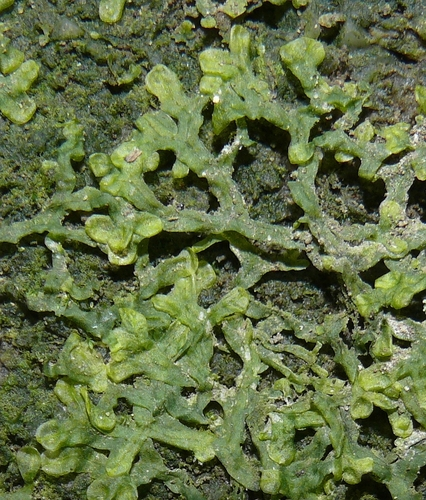

Vandiemeniaceae
No widely accepted common name
Vandiemeniaceae is a monotypic family of leafy liverworts (order Jungermanniales), endemic to Tasmania, Australia. It contains only Vandiemenia ratkowskiana, a small plant characterized by succubously inserted leaves and unique, specialized dorsal gemma receptacles.
Overview
The Vandiemeniaceae family is a remarkable example of bryophyte endemism, containing only a single species, Vandiemenia ratkowskiana, which is found exclusively in Tasmania, Australia. This small, creeping leafy liverwort belongs to the order Jungermanniales but holds an uncertain position within it due to its unique combination of characteristics.
Vandiemenia typically grows on soil, humus, or rotting logs in moist, shaded forest environments, particularly cool temperate rainforests. While vegetatively it might resemble other small leafy liverworts with succubous leaves, it is immediately distinguished by its highly specialized method of asexual reproduction: it produces unique, erect, flask-shaped or cup-like structures on the dorsal surface of the stem that contain endogenous gemmae (gemmae formed inside the receptacle). This feature, along with other morphological details, warrants its placement in a distinct, monotypic family.
Quick Facts
- Scientific Name: Vandiemeniaceae Hewson
- Common Name: (None)
- Number of Genera: 1 (Vandiemenia)
- Number of Species: 1 (Vandiemenia ratkowskiana)
- Distribution: Endemic to Tasmania, Australia. Found in moist, shaded forest habitats.
- Evolutionary Group: Bryophytes - Liverworts (Marchantiophyta) - Jungermanniopsida - Jungermanniales
Key Characteristics
Note: Vandiemeniaceae are small leafy liverworts with unique asexual reproductive structures.
Gametophyte (Leafy Shoot) Structure
The dominant phase is the small leafy gametophyte:
- Form: Small, creeping or ascending shoots, often forming loose patches, typically pale green to brownish-green.
- Stems: Slender.
- Leaves: Arranged in two lateral rows.
- Shape: Typically broadly ovate to rounded, unlobed, with entire margins.
- Insertion: Distinctly succubous (the upper/anterior edge of each leaf overlaps the lower/posterior edge of the leaf above it on the same side of the stem).
- Cells: Relatively small, thin-walled or slightly thickened.
- Underleaves: Present, typically smaller than lateral leaves, often lanceolate or bilobed.
- Branching: Primarily intercalary branching.
- Asexual Reproduction: Highly characteristic via specialized dorsal gemma receptacles. These are erect, flask-shaped or cup-like structures arising from the dorsal stem surface, producing endogenous gemmae (formed inside) which are released through an apical opening.
Reproductive Structures
Likely dioicous (sexual structures may be rare or poorly known).
- Antheridia: Male organs likely borne in the axils of specialized bracts (androecia), possibly on separate shoots.
- Archegonia: Female organs likely terminal on shoots or branches, protected by bracts and a well-developed perianth. The perianth is typically inflated, possibly cylindrical or ovoid, and likely contracted and plicate (pleated) at the mouth.
Sporophyte
The sporophyte develops within the perianth (details may be infrequently observed):
- Foot: Embedded in the stem apex tissue.
- Seta: Elongates at maturity, raising the capsule.
- Capsule: Likely ovoid or globose, dehiscing via 4 valves. Capsule wall likely bistratose.
Spores and Elaters
Contained within the capsule.
- Spores: Details likely require microscopic study.
- Elaters: Present, aiding spore dispersal.
Field Identification
Identifying Vandiemeniaceae (Vandiemenia) relies primarily on recognizing the unique dorsal gemma receptacles, combined with its succubous leaves and Tasmanian distribution.
Primary Identification Features
- Dorsal Gemma Receptacles: The presence of erect, flask-shaped or cup-like structures on the dorsal stem surface producing gemmae is the most diagnostic feature.
- Succubous Leaf Insertion: Lateral leaves overlap like upward-pointing shingles.
- Leafy Structure: Clearly differentiated stems, leaves, and underleaves.
- Endemic Distribution: Found only in Tasmania.
- Habitat: Moist, shaded forest floors, humus, logs.
Secondary Identification Features
- Small Size: Plants are generally small and creeping.
- Underleaves Present: Ventral leaves are present, though may be smaller than lateral leaves.
- Perianth (if fertile): Presence of an inflated perianth protecting the sporophyte base.
Seasonal Identification Tips
- Year-round: Vegetative shoots can be found year-round.
- Gemmae Production: The distinctive gemma receptacles may be present for extended periods, offering the best chance for identification. Sexual reproductive structures and sporophytes might be rarer or seasonal.
Common Confusion Points
Vandiemenia might be confused with other small, succubous leafy liverworts found in Tasmania:
- Lophocoleaceae / Geocalycaceae: Many genera (e.g., Lophocolea, Chiloscyphus, Geocalyx) have succubous leaves and grow in similar habitats. However, they lack the specialized dorsal gemma receptacles of Vandiemenia. Their asexual reproduction (if present) typically involves gemmae produced on leaf margins or shoot tips, not in dorsal cups. They also have different perianth forms.
- Cephaloziaceae: Some have succubous leaves, but often differ in leaf shape (e.g., bilobed), underleaf presence/size, and lack the unique gemma receptacles.
- Calypogeiaceae: Distinguished by incubous leaves, large underleaves, and a perigynium (not a perianth).
- Simple Thalloids: Lack differentiation into stems and leaves.
- Mosses: Have different leaf arrangements, often costate leaves, and different sporophyte structures.
Key differentiator: The unique, erect, dorsal gemma receptacles producing endogenous gemmae are the most reliable feature for identifying Vandiemenia.
Field Guide Quick Reference
Look For:
- Small, creeping leafy shoots
- Leaves succubously inserted
- Unique dorsal gemma receptacles (flask/cup-shaped)
- Underleaves present
- Perianth present (if fertile)
- Endemic to Tasmania (moist forests)
Key Distinctions:
- Possesses unique dorsal gemma receptacles
- Leaf insertion succubous (unlike Calypogeiaceae)
- Clearly leafy (unlike simple thalloids)
- Has perianth (unlike Calypogeiaceae's perigynium)
Notable Examples
The family is monotypic, containing only one known species.

Vandiemenia ratkowskiana
(Ratkowsky's Liverwort - descriptive)
The sole representative of the family, endemic to Tasmania. This small liverwort is characterized by its succubous leaves and, most notably, the unique flask-shaped gemma receptacles produced on the dorsal surface of the stem. It inhabits damp, shaded forest floors.
Phylogeny and Classification
Vandiemeniaceae occupies an uncertain position within the order Jungermanniales. Its unique combination of features, particularly the specialized dorsal gemma receptacles, makes its relationship to other families unclear. It shares succubous leaves with large groups like Lophocoleaceae and Geocalycaceae, but the gemma receptacles are highly distinct. Molecular data are limited but suggest it represents an isolated lineage without close extant relatives.
The family is significant as an example of morphological novelty and endemism within the liverworts. The evolution of the complex dorsal gemma receptacles represents a specialized strategy for asexual reproduction, possibly adapted to its specific ecological niche in Tasmanian cool temperate rainforests. Further phylogenetic studies are needed to clarify its precise position within the Jungermanniales.
Position in Plant Phylogeny
- Kingdom: Plantae
- Division: Marchantiophyta (Liverworts)
- Class: Jungermanniopsida
- Order: Jungermanniales
- Family: Vandiemeniaceae
- (Subordinal placement uncertain)
Evolutionary Significance
Vandiemeniaceae is significant for:
- Unique Asexual Reproduction: The specialized dorsal gemma receptacles represent a novel morphological structure for asexual propagation among liverworts.
- Endemism and Biogeography: Its restriction to Tasmania highlights patterns of regional endemism and potentially represents a relictual lineage.
- Phylogenetic Uncertainty: Underscores the complexity and remaining unknowns in the phylogeny of the highly diverse Jungermanniales.